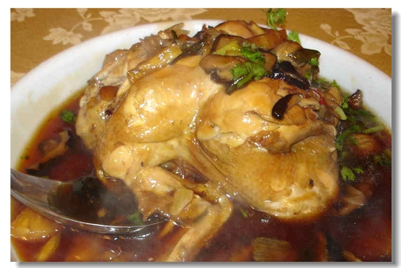

另外有些地方較特殊的形式:
「入厝桌」，第一道起雞（家），第二道菜是湯圓（團圓），最後一道菜不可以用丸類（完了不祥）
「嫁娶桌」首道菜為拼盤（意為結合），次道菜是魚翅（亦為菜色很好請慢慢品嚐）。
「喪事桌」肉是第一道，切成三角形肉，稱為「三角肉」，（意為菜色不多不好，不能讓你吃的滿意）也告訴你，
主家不希望辦這種桌。普通喪事菜數一定是奇數，喜事菜數是偶數。
「吃三角肉」是「喪禮」的暗號，飲紅酒是吃「喜桌」之意。
婚宴不吃鴨和鯉魚，以免影響夫妻恩愛及長久。
連到第4頁
連到第2頁
連到第1頁
連到第5頁